Testes de Software¶
Testes de software¶
Apresentar com detalhes os testes feitos para conferir se os objetivos do software foram atendidos.
- Listar as histórias de usuários e seus respectivos protótipos implementadas.
- Associar as histórias de usuários e os casos de testes funcionais implementados.
- Enviar o print da execução dos suítes de testes automatizados em nível:
- Unitário e integração, com cobertura de código-fonte de pelo menos 80%;
- Sistema, do tipo funcional (end-to-end E2E).
Observações:
- Em relação ao backlog do produto, será considerado como referência aquele descrito no primeiro ponto de controle, contemplando as correções e feedbacks da-os professora(e)s. O ideal seria a real atualização entre o planejado X realizado.
- Os testes mencionados nesta subseção dizem respeito aos testes de software. O Roteiro de testes funcionais, entregue no primeiro ponto de controle deve ser corrigido a partir do apontamento da-os professora(e)s. Além disso, ele deve guiar a execução dos testes E2E automatizados. O conjunto de casos de testes funcionais documentados devem estar coerentes com a automação via interface gráfica de entrada de dados.
Exemplos de ferramentas de teste funcionais E2E:
- Selenium
- Cypress
- Playwright
Exemplos de ferramentas de testes em nível unitário e integração:
- Jest
- unittest
- pytest
- tox
- gTest
- Catch2
Este documento consolida os testes de software do Grupo 1 no segundo ponto de controle. Ele cobre os três elementos de software do produto, conforme a arquitetura do Projeto conceitual de software (doc 4.4):
- Firmware, embarcado no ESP32 do robô e no ESP32 de bancada (gateway), testado com Unity no ambiente nativo do PlatformIO;
- Backend, em Python com FastAPI, testado com pytest;
- Frontend, em React, testado com Vitest nos níveis unitário e de integração e com Playwright no nível de sistema (E2E).
Os testes, a cobertura e os prints foram medidos em 25/10/2026, sobre o commit 85fa9d1 da branch main, que inclui todos os PRs mesclados até essa data, entre eles os testes E2E (#176). A correção de instabilidade dos testes E2E (PR #177) foi mesclada depois dessa medição, e o resultado dela no CI (Frontend CI #22) está na seção 4. A situação das histórias de usuário foi conferida no GitHub na mesma data. A verificação automática das 9 combinações do simulador (seção 5) foi feita em 17/10/2026, durante o PR #165, e está registrada na descrição dele. As evidências estão em docs/evidencias/5.3.2.2 (cobertura, CI e painel) e em docs/evidencias/5.3.2.1 (testes E2E).
1. Histórias de usuário implementadas e protótipos¶
O backlog de referência é o da seção 3 do doc 4.4 (19 histórias de usuário, HU-01 a HU-19). A situação de cada HU considera os critérios de aceitação da própria HU, e não apenas o estado da issue:
- Concluída: os critérios de aceitação foram atendidos e a issue foi fechada após a revisão do PR.
- Aguardando validação no robô: o código e os testes foram mesclados na
main, mas algum critério de aceitação só pode ser comprovado com o robô montado (seção 7). - Aguardando integração com a API do histórico: o código e os testes foram mesclados na
main, mas a funcionalidade só opera com dados reais quando existirem a persistência das corridas (HU-12) e a API do histórico (#142). - Pendente: ainda não implementada.
| HU | História | Épico | Situação | Issue | PR(s) | Protótipo |
|---|---|---|---|---|---|---|
| HU-01 | Manter o robô centralizado nas retas | RF-SFT01 | Aguardando validação no robô | #32 | #167 | - |
| HU-02 | Executar curvas de 90 graus com precisão | RF-SFT01 | Aguardando validação no robô | #33 | #175 | - |
| HU-03 | Registrar as paredes de cada célula visitada | RF-SFT02 | Concluída | #35 | #161 | - |
| HU-04 | Selecionar a geometria da pista antes da largada | RF-SFT02 | Concluída | #36 | #156 | - |
| HU-05 | Dar a largada por botão físico | RF-SFT03 | Concluída | #38 | #162 | Painel em espera |
| HU-06 | Decidir o caminho de forma autônoma | RF-SFT03 | Aguardando validação no robô | #39 | #168 | - |
| HU-07 | Parar automaticamente ao chegar no objetivo | RF-SFT04 | Aguardando validação no robô | #41 | #164, #165 | - |
| HU-08 | Transmitir os dados da prova a cada segundo | RF-SFT05 | Aguardando validação no robô | #43 | #159, #170 | - |
| HU-09 | Ser avisado quando a conexão com o robô cair | RF-SFT05 | Pendente | #44 | - | - |
| HU-10 | Visualizar o mapa do labirinto em tempo real | RF-SFT06 | Concluída | #46 | #158, #165 | 4x4, 8x4, 12x4 |
| HU-11 | Acompanhar os indicadores da prova | RF-SFT06 | Concluída | #47 | #157, #165 | 4x4 |
| HU-12 | Salvar automaticamente cada corrida | RF-SFT07 | Pendente | #49 | - | - |
| HU-13 | Filtrar as corridas anteriores | RF-SFT08 | Aguardando integração com a API do histórico | #51 | #169 | Histórico |
| HU-14 | Rever o trajeto de uma corrida passada | RF-SFT08 | Aguardando integração com a API do histórico | #52 | #172 | Histórico |
| HU-15 | Calcular a rota mais curta após a exploração | RF-SFT09 | Pendente | #54 | - | - |
| HU-16 | Executar o speed run | RF-SFT09 | Pendente | #55 | - | - |
| HU-17 | Fazer curvas em movimento contínuo no speed run | RF-SFT10 | Pendente | #57 | - | - |
| HU-18 | Cortar os motores quando as rodas travarem | RF-SFT11 | Aguardando validação no robô | #59 | #173 | - |
| HU-19 | Ver no painel que o robô travou | RF-SFT11 | Aguardando validação no robô | #60 | #174 | Painel |


Resumo: 5 HUs concluídas, 7 aguardando validação no robô, 2 aguardando integração com a API do histórico e 5 pendentes. Em 25/10/2026, as issues da HU-01 (#32) e da HU-13 (#51) foram reabertas, com comentário no GitHub, para refletir os critérios de aceitação que ainda dependem do robô e da API do histórico, respectivamente.
Observações sobre as HUs que não estão concluídas:
- HU-01: o controle proporcional e derivativo (
ControleReta) está implementado e testado com um modelo do robô. O critério de 3 células com desvio menor que 15 mm depende do robô montado. - HU-02: o controle de curvas (
ControleCurva) gira o robô no próprio eixo até um alvo absoluto, medido pelo IMU, com os encoders como conferência e alternativa. Nas simulações em malha fechada, o maior erro angular acumulado foi de cerca de 1,4°, contra o limite de 3°. O critério precisa ser comprovado no robô, e o procedimento físico ainda precisa ser definido (seção 6). - HU-06: o navegador (exploração com planejamento em largura) está no
main.cppe alimenta posição, orientação e paredes da telemetria. Faltam os drivers reais de sensores e motores, que implementam as interfacesSensoresParedeseExecutorMovimento, e o teste em pista. - HU-07: o módulo
ParadaObjetivoe o congelamento do cronômetro estão prontos e testados, mas ainda não são chamados no laço principal. - HU-08: a telemetria a 1 Hz, a bateria lida pelo divisor no GPIO 34 e a velocidade média estão no firmware. Faltam a medição do enlace com o robô em movimento e a calibração da leitura da bateria.
- HU-13 e HU-14: os filtros por geometria e data e a reprodução de uma corrida (mapa final, barra de tempo, estatísticas e métricas comparativas) estão no frontend e operam sobre a lista de corridas recebida pelos componentes. Sem a persistência (HU-12) e a API do histórico (#142), o painel exibe apenas as corridas da sessão.
- HU-18: o
DetectorTravamentoacompanha os pulsos de cada roda separadamente e confirma o travamento após 1000 ms sem pulsos com tração ativa. OMonitorTravamento, executado a cada 50 ms, corta a tração, congela o cronômetro e sinaliza o estado TRAVADO, o que leva o corte a ocorrer entre 1000 e 1050 ms após o bloqueio. Os módulos ainda não são chamados no laço principal e dependem do driver dos encoders. - HU-19: o painel mostra o status "Travado" em destaque, com ícone de alerta e a mensagem "Corte de tração por travamento das rodas", e registra a tentativa no histórico da sessão. A exibição é verificada por teste E2E (seção 4); a HU depende da HU-18 no robô para ser comprovada com um travamento real.
Protótipos. Os protótipos citados na tabela são os da seção 3.2 do doc 4.4, reproduzidos abaixo para comparação com o painel implementado, capturado com o simulador na seção 5.
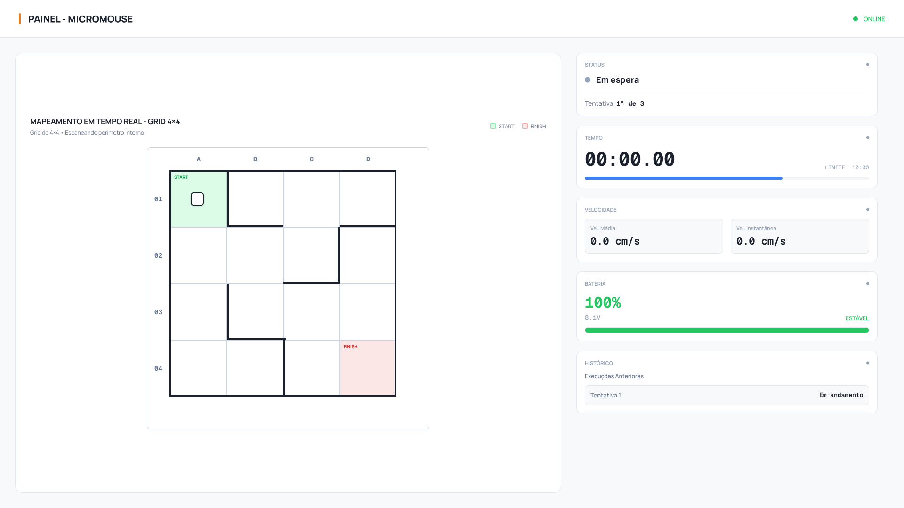
Protótipo do painel de monitoramento em espera na largada, pista 4x4 (HU-05).
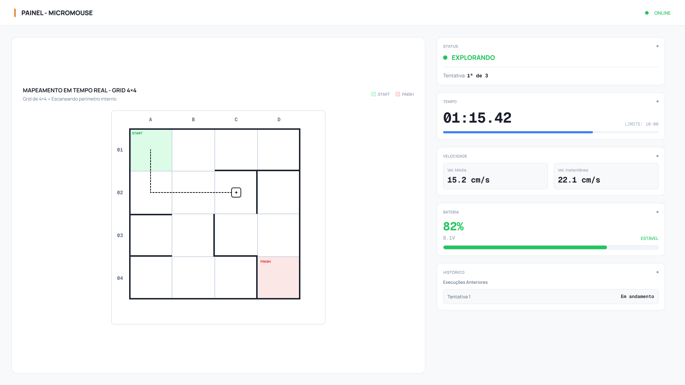
Protótipo do painel de monitoramento durante a exploração da pista 4x4, com mapa, indicadores e status (HU-10, HU-11 e HU-19).
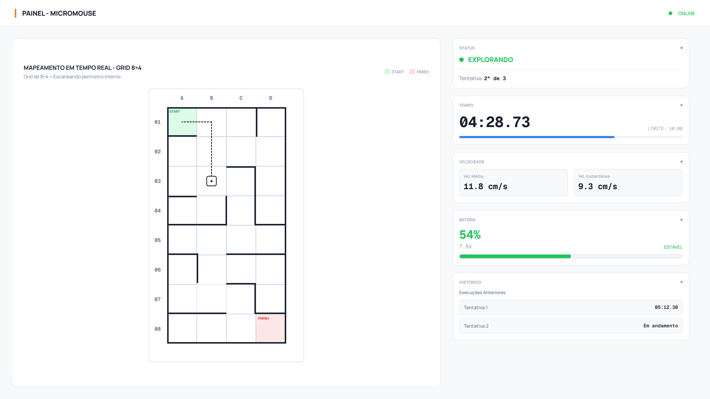
Protótipo do painel de monitoramento na pista 8x4 (HU-10).
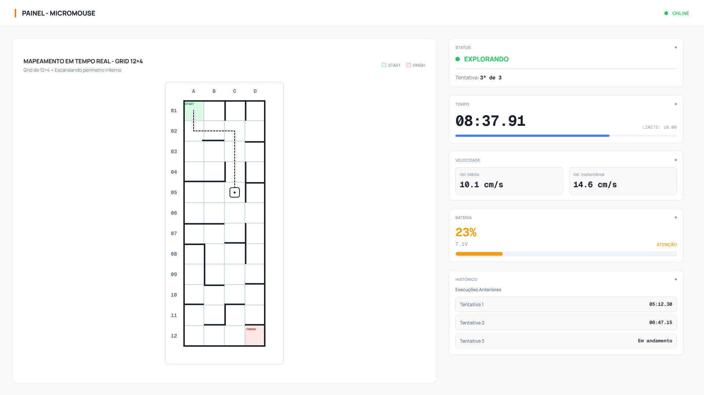
Protótipo do painel de monitoramento na pista 12x4 (HU-10).
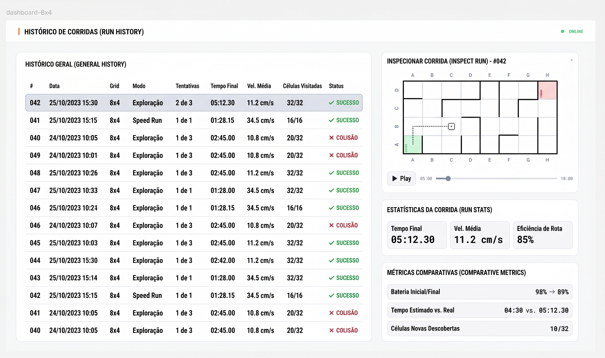
Protótipo da tela de histórico de corridas, com filtros, inspeção, reprodução e estatísticas (HU-13 e HU-14).
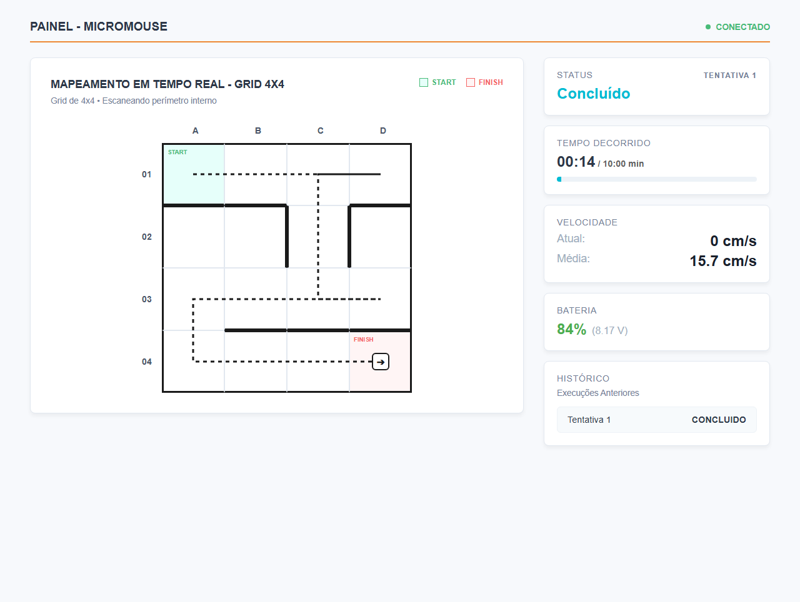
Painel implementado ao fim de uma corrida completa na pista 4x4, com o simulador, para comparação com o protótipo da pista 4x4.
2. Associação entre histórias de usuário, casos de teste e automação¶
A tabela relaciona cada caso de teste funcional da seção 7 do doc 4.4 às HUs e aos testes automatizados que o cobrem. O número entre parênteses é a quantidade de casos da suíte. A coluna "Situação" usa quatro categorias:
- Automatizado e passando: a lógica de software do caso é verificada por testes unitários ou de integração, todos aprovados.
- Automatizado em E2E: o comportamento é verificado pela interface gráfica do painel, com o backend alimentado pelo simulador (seção 4).
- Validado em simulação: o comportamento foi exercitado de ponta a ponta com o simulador (seção 5), sem o robô.
- Depende do robô (AP18): o critério de aceitação só pode ser medido com o robô montado, os drivers e a calibração (seção 7).
Um mesmo CT pode combinar as categorias: a lógica já validada e a medição física pendente.
| CT | Caso de teste | HUs | Testes automatizados (arquivo / suíte) | Situação |
|---|---|---|---|---|
| CT-01 | Centralização do robô em reta | HU-01 | Firmware: robo/test/test_controle (29), incluindo test_tres_celulas_em_reta_ficam_abaixo_de_15_mm_de_desvio e test_trecho_sem_parede_lateral_mantem_o_rumo_pelo_imu |
Automatizado e passando (modelo do controle); medição física na AP18 |
| CT-02 | Precisão das rotações de 90° | HU-02 | Firmware: test_curva (33), incluindo test_uma_curva_de_90_graus_fica_dentro_de_3_graus, test_24_curvas_seguidas_nao_acumulam_erro e test_sem_imu_os_encoders_fecham_a_curva_dentro_de_3_graus |
Automatizado e passando (modelo do robô em malha fechada); medição física na AP18 |
| CT-03 | Fidelidade do mapeamento nas três geometrias | HU-03, RNF-SFT02 | Firmware: test_mapa (22), incluindo test_percurso_simulado_reproduz_a_pista_4x4; test_direcao (8); test_navegador (35), com cenários 4x4, 8x4 e 12x4. Backend: tests/test_simulador_robo.py (21). Frontend: servicos/painelTelemetria.test.js (24) e servicos/labirinto.test.js (29) |
Validado em simulação; pista física na AP18 |
| CT-04 | Seleção da geometria antes da largada | HU-04 | Firmware: test_mapa (troca de geometria) e test_botao (17), incluindo test_um_dois_e_tres_toques_na_mesma_janela. Frontend: painelTelemetria.test.js (recomeça ao trocar de geometria). E2E: grade com as dimensões de cada geometria, nos três testes do CT-09 |
Automatizado em E2E (painel); botão real na AP18 |
| CT-05 | Largada e navegação autônoma | HU-05, HU-06, RNF-SFT01 | Firmware: test_botao (17), incluindo test_largada_so_acontece_ao_soltar_depois_de_2_s; test_cronometro (14); test_navegador (35), incluindo test_navegacao_depende_somente_de_leituras_internas |
Automatizado e passando; corrida física na AP18 |
| CT-06 | Parada automática no objetivo | HU-07 | Firmware: test_parada_objetivo (16), incluindo test_latencia_de_software_abaixo_de_200ms e test_parada_congela_o_cronometro_real_na_chegada; test_cronometro (14). E2E: status "Concluído" com o robô na chegada, nos três testes do CT-09 |
Automatizado e passando; integração no laço e medição física na AP18 |
| CT-07 | Transmissão da telemetria a 1 Hz | HU-08 | Firmware: test_telemetria (21), test_bateria (8), test_velocidade_media (6), gateway/test/test_bridge (6). Backend: tests/test_modelos_telemetria.py (94), tests/test_ingestao_serial.py (18). E2E: tempo, bateria e velocidade exibidos no painel, nos três testes do CT-09 |
Automatizado e passando; enlace de 60 s com o robô na AP18 |
| CT-08 | Aviso de perda de conexão | HU-09 | Backend: cenário perda_conexao do simulador em tests/test_simulador_gerador.py (31). Frontend: reconexão em servicos/telemetriaWs.test.js (19). E2E: indicador DESCONECTADO com o backend derrubado e CONECTADO quando ele volta |
Indicador de conexão do painel automatizado em E2E; o aviso "Conexão RF perdida" (HU-09) ainda não existe |
| CT-09 | Painel sincronizado com a pista | HU-10, HU-11, RNF-SFT03 | Frontend: painelTelemetria.test.js (24), telemetriaWs.test.js (19), labirinto.test.js (29), componentes/Labirinto.test.jsx (7), formatacao.test.js (11). Backend: tests/test_api_telemetria_ws.py (6), tests/test_ingestao_ponta_a_ponta.py (9). E2E: corrida completa nas três geometrias e recomeço do mapa a cada corrida |
Automatizado em E2E; latência física na AP18 |
| CT-10 | Persistência de corridas concluídas e interrompidas | HU-12 | Nenhum | Pendente (HU-12) |
| CT-11 | Filtragem do histórico | HU-13, RNF-SFT04 | Frontend: servicos/historicoFiltros.test.js (13), incluindo o teste de 500 registros; componentes/HistoricoCorridas.test.jsx (7) |
Automatizado e passando sobre dados em memória; com banco, pendente (HU-12 e #142) |
| CT-12 | Reprodução de corrida passada | HU-14 | Frontend: servicos/replayCorrida.test.js (12), incluindo a montagem dos quadros, a busca por instante e o cálculo das estatísticas com 600 leituras; componentes/ReplayCorrida.test.jsx (3) |
Automatizado e passando sobre dados em memória; com banco, pendente (HU-12 e #142) |
| CT-13 | Speed run mais rápido que a exploração | HU-15, HU-16 | Nenhum | Pendente; depende do robô (AP18) |
| CT-14 | Curva em movimento contínuo | HU-17 | Nenhum | Pendente; depende do robô (AP18) |
| CT-15 | Corte de tração por travamento | HU-18, HU-19 | Firmware: test_travamento (13), incluindo test_monitor_corta_em_no_maximo_1200ms_com_verificacao_a_cada_50ms e test_dispara_quando_apenas_roda_esquerda_trava. Frontend: componentes/IndicadorStatus.test.jsx (7), painelTelemetria.test.js (registro da tentativa encerrada por TRAVADO), formatacao.test.js. Backend: cenário travado do simulador. E2E: "Travado" em destaque no cenário travado |
Detecção e corte automatizados e passando; exibição no painel automatizada em E2E; medição física na AP18 |
3. Testes unitários e de integração com cobertura¶
Os testes rodam localmente e no GitHub Actions a cada PR que altera a pasta correspondente (workflows firmware-ci.yml, backend-ci.yml e frontend-ci.yml). Em cada workflow, a tabela de cobertura é publicada no resumo da execução e o relatório HTML fica nos artefatos.
Resumo das medições em 25/10/2026:
| Parte | Ferramenta | Testes | Linhas | Funções | Ramos | Situação frente aos 80% |
|---|---|---|---|---|---|---|
| Firmware do robô | Unity + gcovr | 222 (12 suítes) | 96,9% | 98,1% | 91,4% | Atende |
| Firmware do gateway | Unity + gcovr | 6 (1 suíte) | 97,4% | 100,0% | 76,8% | Atende em linhas e funções; ramos abaixo (ver 3.1) |
| Backend | pytest + pytest-cov | 222 | 99,7% (statements) | - | 98,9% | Atende |
| Frontend | Vitest + v8 | 132 (10 arquivos) | 89,5% | 76,8% | 86,4% | Atende em linhas e ramos; arquivos abaixo (ver 3.3) |
Todos os 582 testes unitários e de integração foram aprovados. Em relação à medição de 21/10/2026, entraram 46 testes no firmware do robô (HU-02 e HU-18) e 25 no frontend (HU-14 e HU-19).
3.1 Firmware (robô e gateway)¶
Os testes rodam no ambiente native do PlatformIO, compilado com --coverage, sem o ESP32. A lógica foi separada do hardware em cabeçalhos testáveis, e os arquivos que dependem do Arduino ou do rádio (main.cpp, RadioTelemetria.cpp, Bateria.cpp e gateway/src/main.cpp) não são compilados no ambiente nativo. Por isso esses arquivos não aparecem no relatório; eles são verificados pelo build para o ESP32 no CI.
| Suíte (robô) | Testes | Suíte (robô) | Testes |
|---|---|---|---|
test_bateria |
8 | test_mapa |
22 |
test_botao |
17 | test_navegador |
35 |
test_controle |
29 | test_parada_objetivo |
16 |
test_cronometro |
14 | test_telemetria |
21 |
test_curva |
33 | test_travamento |
13 |
test_direcao |
8 | test_velocidade_media |
6 |
| Arquivo | Linhas | Funções | Ramos |
|---|---|---|---|
lib/telemetria/src/TelemetriaCodec.h |
86,6% (71/82) | 100% | 77,8% |
lib/telemetria/src/TelemetriaJson.h |
100% | 100% | 98,0% |
lib/telemetria/src/TemporizadorPeriodico.h |
100% | 100% | 100% |
robo/src/botao/Botao.h |
100% | 100% | 95,5% |
robo/src/controle/ControleCurva.h |
100% | 100% | 100% |
robo/src/controle/ControleReta.h |
100% | 100% | 100% |
robo/src/cronometro/Cronometro.h |
100% | 100% | 100% |
robo/src/mapa/Direcao.h |
87,9% (29/33) | 100% | 85,2% |
robo/src/mapa/Mapa.h |
100% | 100% | 95,2% |
robo/src/navegacao/InterfacesNavegacao.h |
100% | 100% | - |
robo/src/navegacao/Navegador.h |
96,2% (153/159) | 100% | 83,9% |
robo/src/navegacao/VelocidadeMedia.h |
100% | 100% | 100% |
robo/src/parada/AdaptadorCronometro.h |
100% | 100% | - |
robo/src/parada/ParadaObjetivo.h |
100% | 100% | 100% |
robo/src/seguranca/DetectorTravamento.h |
100% | 100% | 100% |
robo/src/seguranca/MonitorTravamento.h |
93,5% (43/46) | 85,0% (17/20) | 93,8% |
robo/src/sensores/BateriaConversao.h |
100% | 100% | 100% |
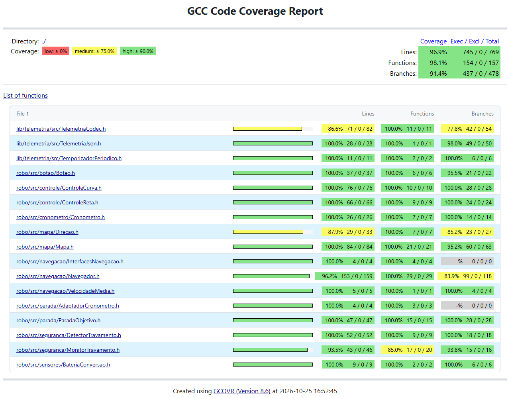
Cobertura do firmware do robô (gcovr).
As três funções e as três linhas não cobertas de MonitorTravamento.h são as implementações padrão dos métodos virtuais da interface IFontePulsos, que os testes substituem por uma fonte de pulsos própria. As linhas restantes de Direcao.h são os return defensivos após os switch, que nunca são alcançados.
No gateway, a suíte test_bridge (6 testes) cobre a ponte entre o quadro ESP-NOW e a linha JSON: 97,4% das linhas (114/117) e 100% das funções (17/17). A cobertura de ramos (76,8%, 76/99) fica abaixo de 80% por causa do TelemetriaCodec.h (57,1% dos ramos), cujas validações campo a campo são testadas na suíte test_telemetria do robô, que compartilha a mesma biblioteca e alcança 77,8% dos ramos nesse arquivo.
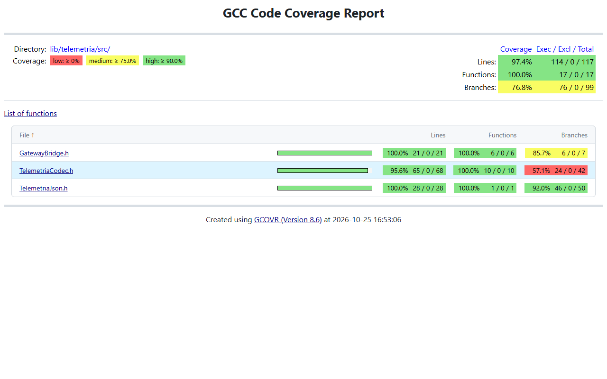
Cobertura do firmware do gateway (gcovr).
Para reproduzir, em src/firmware (troque robo por gateway para o gateway):
pio test -d robo -e native
gcovr --root . --filter lib/ --filter robo/src/ --exclude-throw-branches --exclude-unreachable-branches --html-details cobertura/index.html robo/.pio/build/native
3.2 Backend¶
Os 222 testes cobrem o schema da telemetria (TelemetriaMensagem), o WebSocket /ws/telemetria, as fontes de telemetria (serial e simulador), a configuração e o simulador de corridas (pistas, robô virtual e gerador). Os testes de integração incluem um gateway emulado por socket local, lido pelo pyserial real, e um cliente WebSocket que recebe a corrida do simulador através da aplicação FastAPI completa. O backend não teve alterações de código desde a medição de 21/10/2026, e os números se mantiveram.
| Arquivo de teste | Testes | Arquivo de teste | Testes |
|---|---|---|---|
test_api_saude.py |
1 | test_modelos_telemetria.py |
94 |
test_api_telemetria_ws.py |
6 | test_simulador_gerador.py |
31 |
test_config.py |
13 | test_simulador_pistas.py |
22 |
test_ingestao_ponta_a_ponta.py |
9 | test_simulador_robo.py |
21 |
test_ingestao_serial.py |
18 | test_ingestao_simulador.py |
7 |
A cobertura é de 99,7% das instruções (629/631) e 98,9% dos ramos (176/178), com relatório total de 99%. As duas instruções não cobertas são a chamada sys.exit(main()) do __main__ do simulador e uma verificação defensiva do flood fill do robô virtual.
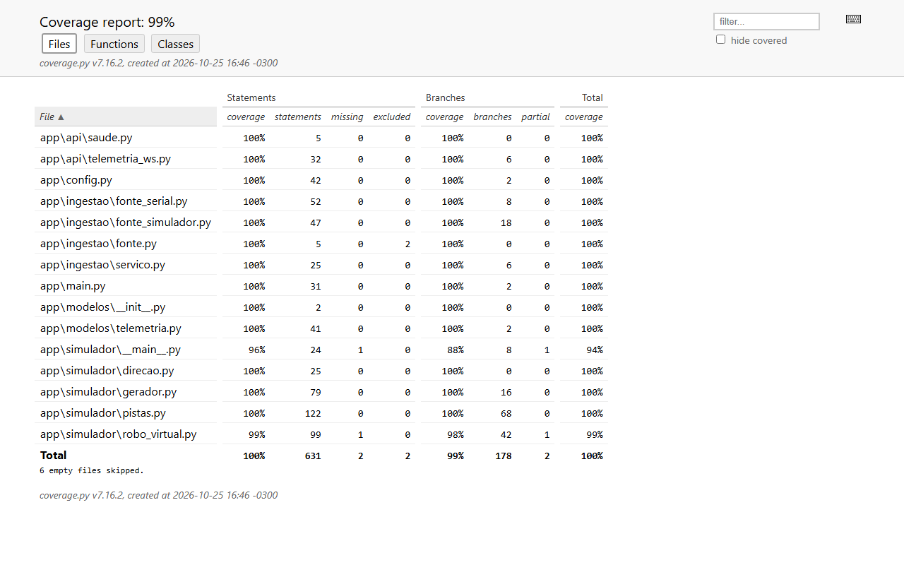
Cobertura do backend (pytest-cov).
Para reproduzir, em src/backend (no PowerShell; no Linux, com o ambiente ativado, pytest --cov=app):
.\.venv\Scripts\python -m pytest --cov=app --cov-report=term-missing --cov-report=html
3.3 Frontend¶
Os 132 testes cobrem os serviços (formatação, mapa do labirinto, estado do painel, cliente WebSocket, filtros do histórico e reprodução de corridas) e os componentes Labirinto, IndicadorStatus, HistoricoCorridas e ReplayCorrida. No total, 89,5% das linhas (1687/1885), 86,4% dos ramos (370/428) e 76,8% das funções (43/56).
| Arquivo de teste | Testes | Arquivo de teste | Testes |
|---|---|---|---|
servicos/formatacao.test.js |
11 | servicos/telemetriaWs.test.js |
19 |
servicos/historicoFiltros.test.js |
13 | componentes/HistoricoCorridas.test.jsx |
7 |
servicos/labirinto.test.js |
29 | componentes/IndicadorStatus.test.jsx |
7 |
servicos/painelTelemetria.test.js |
24 | componentes/Labirinto.test.jsx |
7 |
servicos/replayCorrida.test.js |
12 | componentes/ReplayCorrida.test.jsx |
3 |
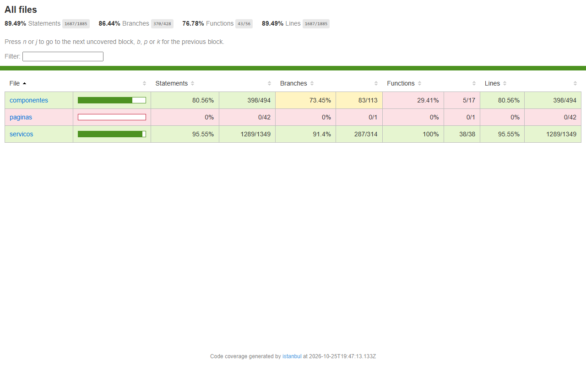
Cobertura do frontend por pasta (Vitest).
Os serviços, onde fica a lógica do painel, têm 95,6% das linhas, 91,4% dos ramos e 100% das funções. Ficam abaixo de 80%:
paginas/Painel.jsxe os componentesIndicadorBateria,IndicadorTempoeIndicadorVelocidade(0% no Vitest). Eles só montam a tela a partir de dados já tratados pelos serviços testados: o estado do painel vem dereduzirTelemetriae os rótulos deformatacao.js, ambos com 100%. Esses componentes são exercitados pelos testes E2E da seção 4, que conferem na tela o tempo, a bateria, a velocidade e o estado da conexão; a cobertura dos E2E não entra nesta medição.HistoricoCorridas.jsx: 87,4% das linhas, mas 22,2% das funções e 51,0% dos ramos, porque os testes renderizam o componente no servidor e não acionam os controles de filtro. A lógica dos filtros é testada emhistoricoFiltros.js(94,1% das linhas).ReplayCorrida.jsx: 83,3% das linhas e 90% dos ramos, mas 33,3% das funções, pelo mesmo motivo: os controles de reprodução (iniciar, pausar e mover a barra de tempo) não são acionados. A lógica da reprodução é testada emreplayCorrida.js(100% das linhas).
Em relação a 21/10/2026, o IndicadorStatus.jsx passou de 0% para 100%, com os testes da HU-19.
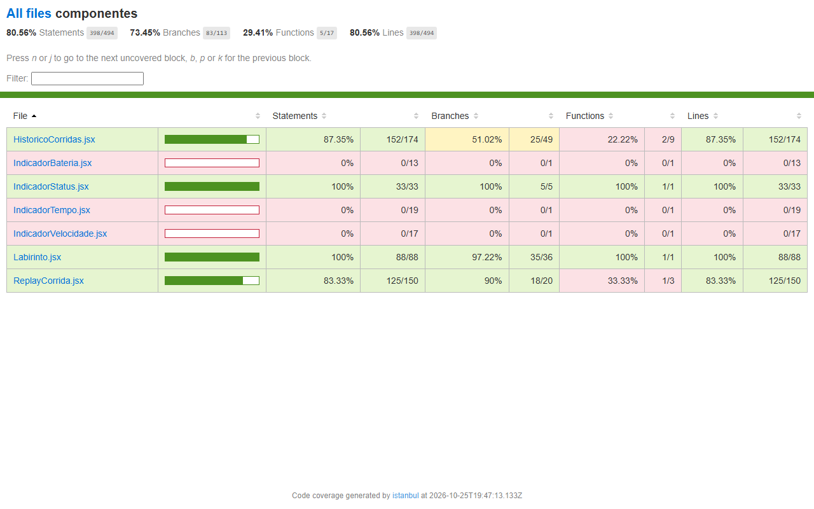
Cobertura dos componentes do frontend (Vitest).
Para reproduzir, em src/frontend:
npx vitest run --coverage
3.4 Integração contínua¶
As últimas execuções dos três workflows na main foram aprovadas. Os prints abaixo foram feitos sem login no GitHub, e por isso mostram o resultado, os jobs e os artefatos publicados, mas não a tabela de cobertura do resumo, que o GitHub exibe só para usuários autenticados.
| Workflow | Execução | Commit | Resultado |
|---|---|---|---|
| Firmware CI | #26 | 5935627 (PR #173) |
Aprovado: robô e gateway, testes nativos e build ESP32 |
| Backend CI | #10 | 4f9570d (PR #171) |
Aprovado |
| Frontend CI | #19 | 85fa9d1 (PR #176) |
Aprovado: lint, testes com cobertura e build (20 s) e testes E2E (3 min 5 s) |
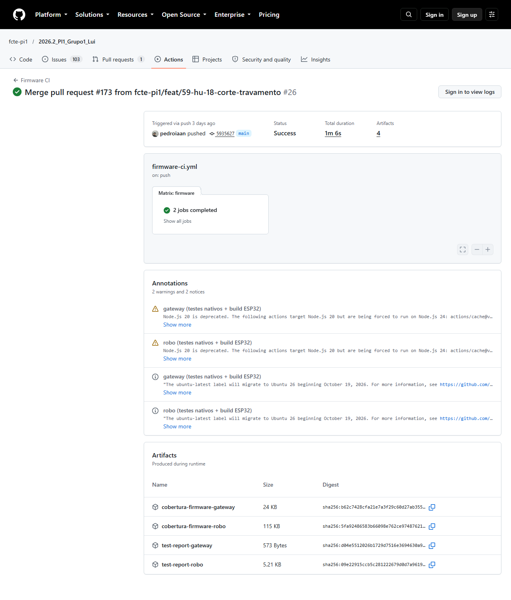
Execução do Firmware CI.
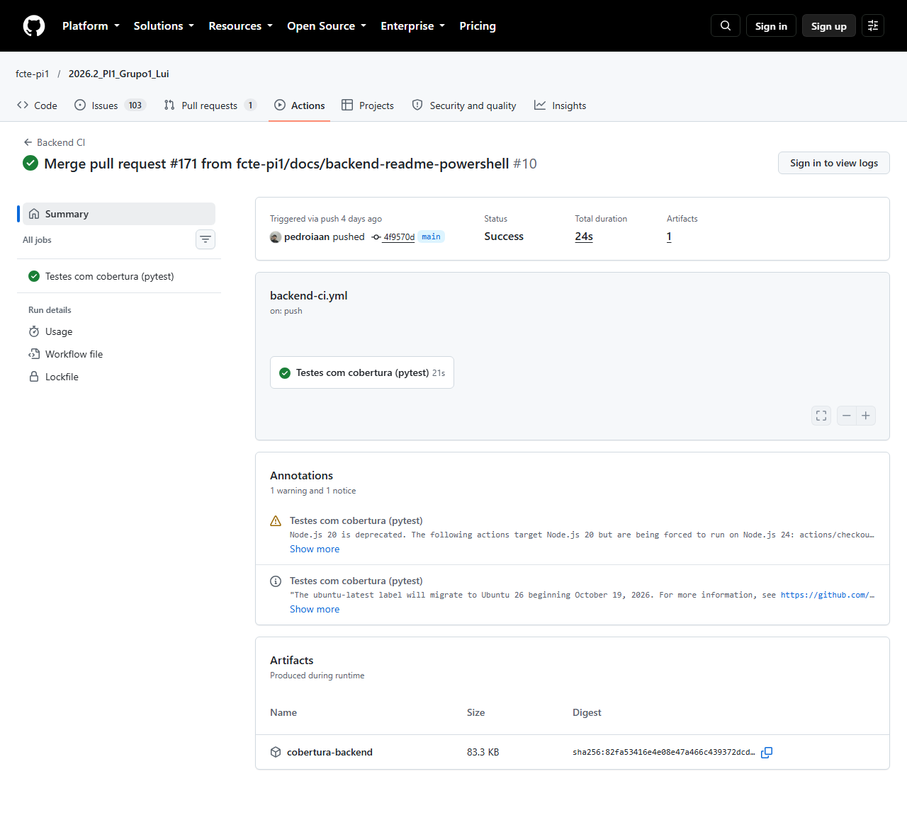
Execução do Backend CI.
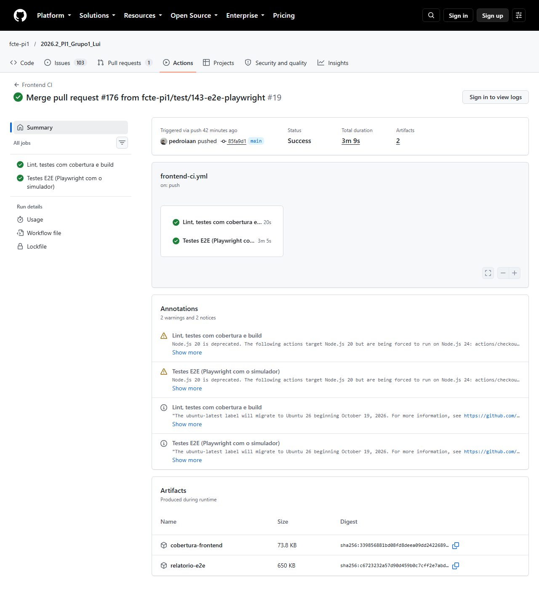
Execução do Frontend CI.
4. Testes E2E (sistema, funcionais)¶
Os testes E2E foram entregues na issue #143 (PR #176, mesclado em 25/10/2026). Eles usam o Playwright com o Chromium e exercitam o painel pela interface gráfica, como o operador o vê, seguindo os casos de teste do roteiro.
Arquitetura. O Playwright sobe o servidor do Vite com o painel. Cada teste sobe o seu próprio backend com o simulador de corridas (seção 5), numa porta livre e com velocidade acelerada, de modo que cada teste acompanha uma corrida inteira desde a largada, os testes rodam em paralelo e o teste do CT-08 pode derrubar o backend e subi-lo de novo. O código do painel não foi alterado para os testes; foram acrescentados apenas atributos data-testid aos indicadores de tempo, velocidade e bateria. Os testes estão em src/frontend/e2e/ e rodam no job "Testes E2E (Playwright com o simulador)" do Frontend CI, em todo PR que altera src/frontend ou src/backend, com o relatório HTML publicado no artefato relatorio-e2e.
| Teste | Caso de teste | O que é verificado |
|---|---|---|
| Corrida completa em 4x4 | CT-09, com CT-04, CT-06 e CT-07 parciais | O painel conecta (CONECTADO); a grade tem as dimensões da geometria; o robô passa por pelo menos 4 posições e o rastro cresce durante a corrida; o status termina em "Concluído" com o robô na chegada; tempo, bateria (% e V) e velocidade aparecem no painel |
| Corrida completa em 8x4 | CT-09, com CT-04, CT-06 e CT-07 parciais | Idem, com chegada em D8 |
| Corrida completa em 12x4 | CT-09, com CT-04, CT-06 e CT-07 parciais | Idem, com chegada em D12 |
| Travamento | CT-15 (exibição) | No cenário travado, o painel passa de "Explorando" para "Travado", com destaque de alerta, ícone e a mensagem "Corte de tração por travamento das rodas" |
| Queda do backend | CT-08 (parcial) | Com a corrida em andamento, o backend é derrubado e o indicador vai para DESCONECTADO, mantendo o último estado na tela; o backend sobe de novo e o indicador volta para CONECTADO |
| Recomeço do mapa | CT-09 | Com o simulador repetindo a corrida, a Tentativa 2 começa com o mapa limpo e o robô em A1, e termina com o mesmo rastro da primeira |
Resultados.
- CI, na
main, com a versão inicial dos testes (Frontend CI #19, commit85fa9d1, PR #176): 6 testes, 6 aprovados, em 36,5 s de execução; o job completo, com a instalação do Python, do Node e do Chromium, levou 3 min 5 s. - Instabilidade encontrada e corrigida: ao repetir os testes localmente, em 25/10/2026, com 6 workers em paralelo e a máquina carregada, foram encontradas falhas intermitentes nos testes do CT-09, do CT-15 e do recomeço do mapa (por exemplo, 3 falhas em 18 execuções com
--repeat-each=3). A causa estava nos testes, e não no painel: o Playwright amostrava a posição do robô e o status em intervalos de cerca de 100 ms e, sob carga, perdia passos de corridas que duram menos de 3 s. A correção registra o percurso dentro da própria página, com umMutationObserver, e foi mesclada namainem 25/10/2026 pelo PR #177. Com a correção, foram executadas duas rodadas de 30 execuções (--repeat-each=5), todas aprovadas, e as mutações introduzidas de propósito no painel (ignorar os pacotes de exploração e desligar o recomeço do mapa) foram detectadas pelos testes. - CI, na
main, com a correção (Frontend CI #22, commit302b10e, PR #177): 6 testes, 6 aprovados, em 35,4 s de execução; o job completo levou 1 min 16 s.
O relatório HTML abaixo é de uma execução local com a correção do PR #177: 6 testes, 6 aprovados, em 32,1 s.
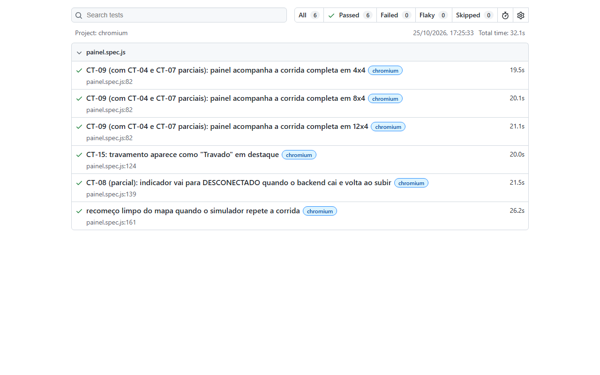
Relatório HTML do Playwright: os 6 testes E2E aprovados, com o tempo de cada um.
Evidências. Os prints abaixo foram gerados pelo próprio Playwright durante os testes, com npm run test:e2e:evidencias, na versão do PR #176. O vídeo da corrida completa na pista 12x4 está em ct09-12x4.webm, e todos os arquivos estão na pasta docs/evidencias/5.3.2.1.

CT-09, pista 4x4: corrida concluída, com o robô na chegada (D4), as paredes e o rastro desenhados e o indicador CONECTADO.
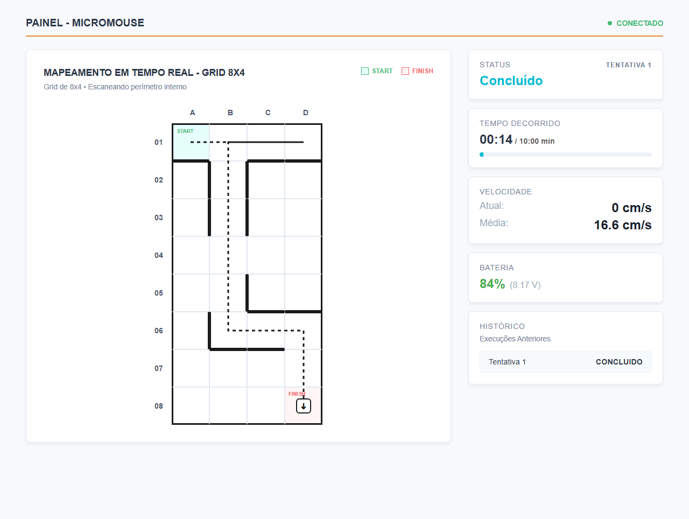
CT-09, pista 8x4: corrida concluída, com o robô na chegada (D8).
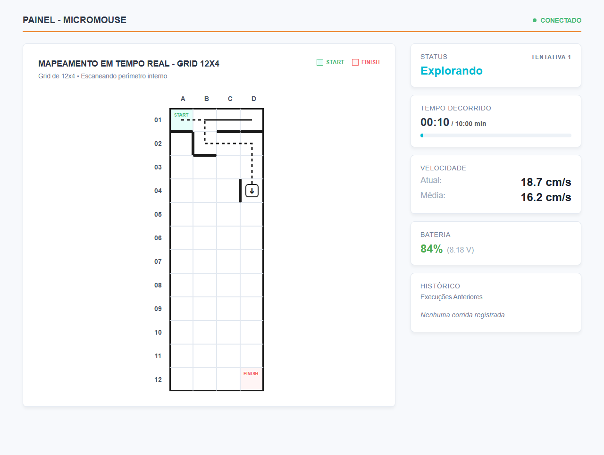
CT-09, pista 12x4, durante a exploração: o mapa é desenhado à medida que o robô avança, com o status "Explorando".
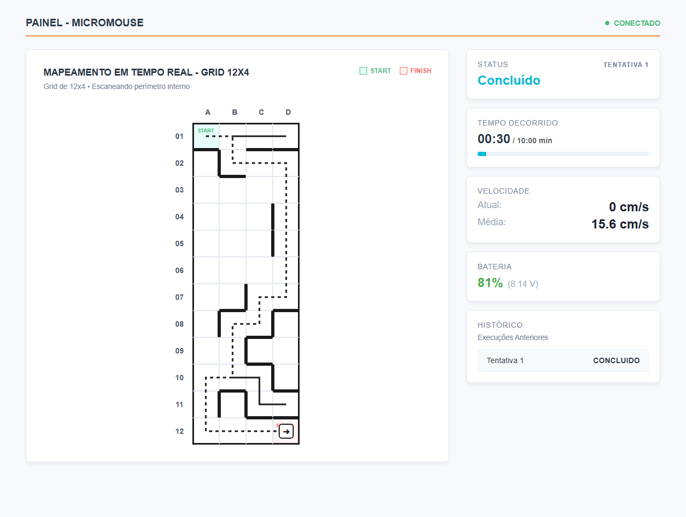
CT-09, pista 12x4: corrida concluída, com o robô na chegada (D12).
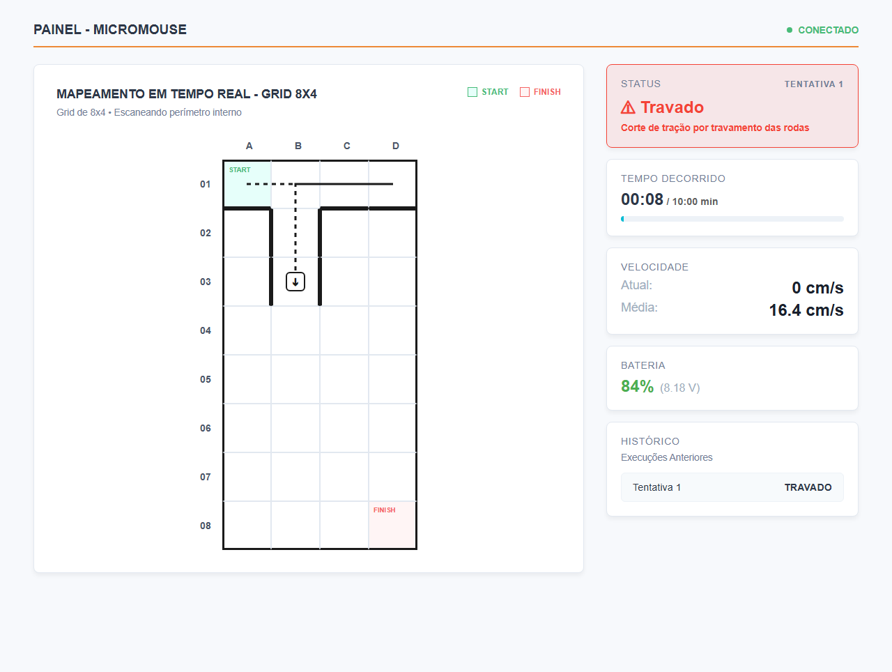
CT-15, cenário travado na pista 8x4: status "Travado" em destaque, com ícone de alerta, a mensagem de corte de tração e a tentativa registrada no histórico.
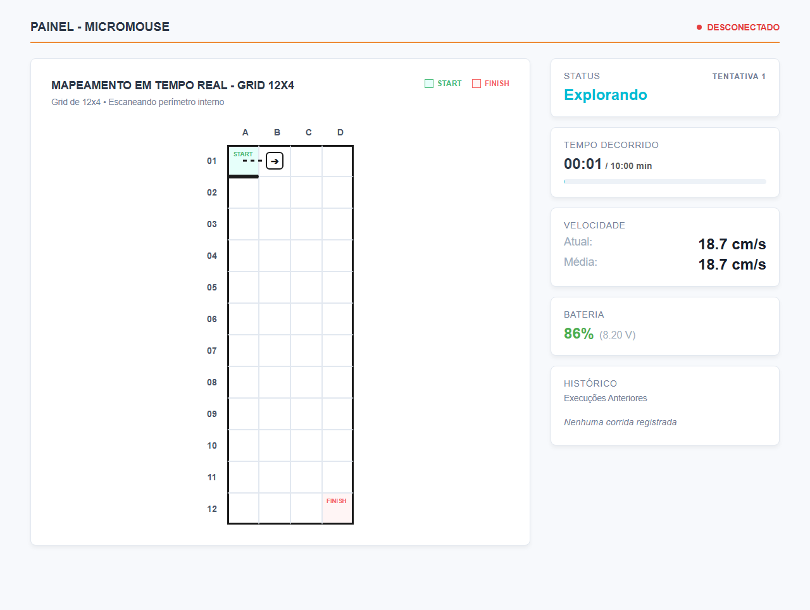
CT-08, backend derrubado durante a corrida: indicador DESCONECTADO, com o último estado recebido mantido na tela.
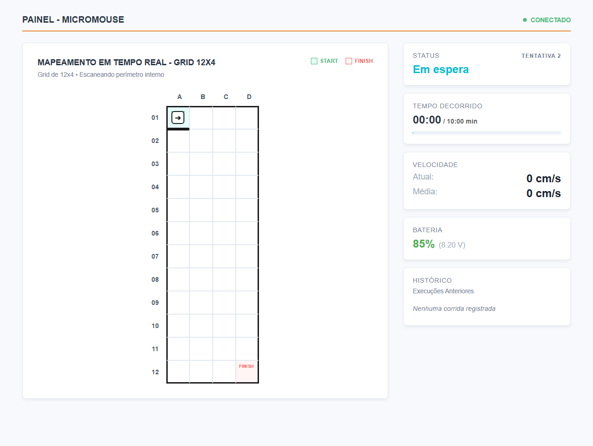
CT-08, backend de volta: indicador CONECTADO; o novo backend inicia outra corrida, por isso aparece a Tentativa 2.
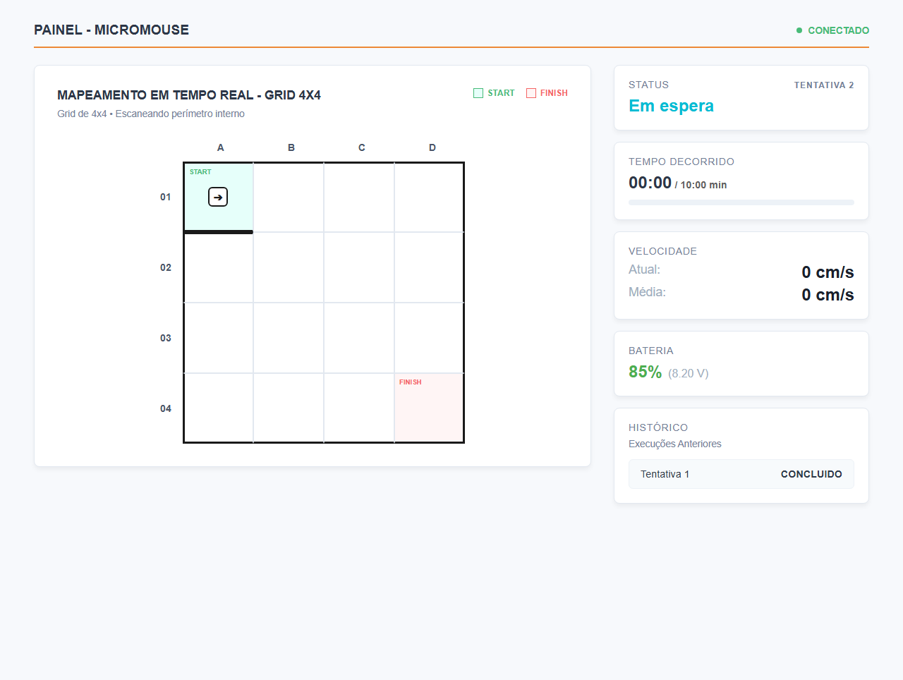
Recomeço do mapa: na largada da Tentativa 2, o mapa está limpo e o robô em A1, e a Tentativa 1 aparece no histórico como concluída.
Casos não automatizados em E2E.
- CT-10, CT-11 e CT-12 com dados reais: dependem da persistência das corridas (HU-12) e da API do histórico (#142). A lógica dos filtros e da reprodução já é testada sobre dados em memória (seção 2).
- Aviso "Conexão RF perdida" do CT-08: depende da HU-09.
- Critérios físicos de CT-04, CT-06, CT-07, CT-09 e CT-15: botão real, tempo de parada, enlace de 60 s, atraso entre a pista e o painel e tempo de corte dos motores dependem do robô montado (seção 7).
5. Validação de ponta a ponta com o simulador¶
Como o robô ainda não está montado, o sistema foi validado de ponta a ponta com o simulador de corridas do backend (#141). O simulador emula o robô explorando as três pistas de exemplo dos slides do tema e gera, a cada segundo, a mesma linha JSON que o gateway escreve na serial. Cinco linhas geradas foram comparadas byte a byte com as produzidas pelo código do gateway compilado nativamente. O backend difunde cada mensagem pelo WebSocket, e o painel desenha o mapa e os indicadores. O mesmo simulador alimenta os testes E2E da seção 4.
Procedimento (detalhado na seção "Rodando o sistema com o simulador" de src/README.md):
- Em
src/backend, escolher a geometria e o cenário pelas variáveisTELEMETRIA_FONTE=simulador,SIMULADOR_LABIRINTO(4x4,8x4ou12x4) eSIMULADOR_CENARIO(completa,travadoouperda_conexao), e subir o backend com.\.venv\Scripts\python -m uvicorn app.main:app. - Em
src/frontend, subir o painel comnpm run deve abrir o endereço no navegador. - O simulador fica em espera na largada até o painel conectar e então dá a largada, de modo que a corrida aparece inteira, desde A1.
Verificações realizadas. Em 17/10/2026, durante o PR #165, as três geometrias foram executadas nos três cenários (9 combinações), com repetição das corridas. Um verificador no navegador leu a tela do painel a cada 150 ms (1.289 leituras) e comparou as paredes desenhadas com as paredes reais de cada pista. Resultados:
| Geometria | completa |
travado |
perda_conexao |
|---|---|---|---|
| 4x4 | "Concluído" em D4 | "Travado" em D3 | Para em "Explorando" em D3 |
| 8x4 | "Concluído" em D8 | "Travado" em B3 | Para em "Explorando" em B3 |
| 12x4 | "Concluído" em D12 | "Travado" em C8 | Para em "Explorando" em C8 |
- Nenhuma parede desenhada divergiu da pista real nas células visitadas.
- A cada nova corrida o mapa recomeçou limpo, com o rastro saindo de A1.
- O indicador mostrou CONECTADO durante as corridas e DESCONECTADO com o backend parado, e o painel reconectou sozinho nas 9 vezes.
Os prints a seguir foram refeitos em 25/10/2026, com o painel atual (que passou a exibir a tentativa, o histórico da sessão e o destaque de "Travado"), com o simulador a 4 vezes a velocidade normal, ao fim de cada corrida. As posições e os tempos finais coincidem com os da verificação de 17/10/2026.
Cenário completa:
Painel com o simulador, pista 4x4, corrida completa.

Painel com o simulador, pista 8x4, corrida completa.

Painel com o simulador, pista 12x4, corrida completa.
Cenário travado:
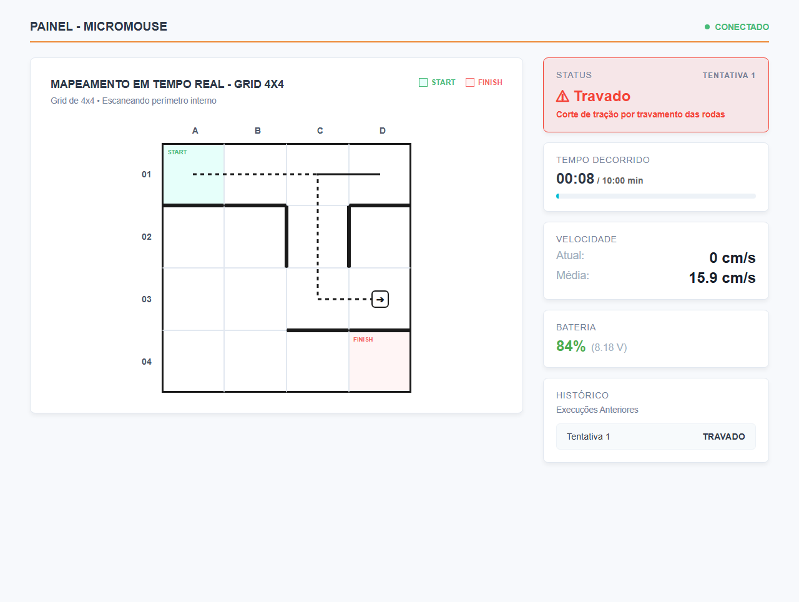
Painel com o simulador, pista 4x4, robô travado.

Painel com o simulador, pista 8x4, robô travado.
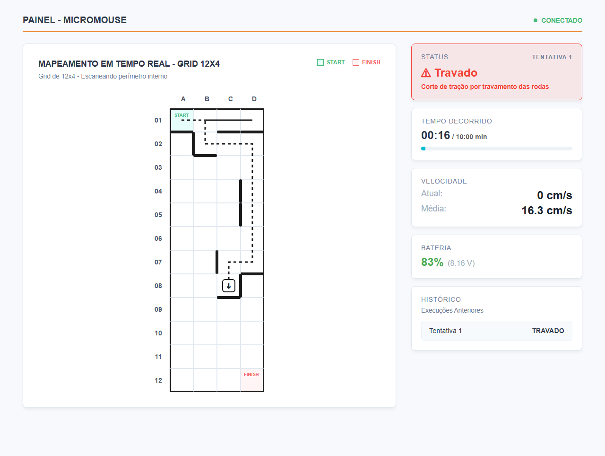
Painel com o simulador, pista 12x4, robô travado.
Limitações desta validação.
- O simulador substitui o robô e o gateway, mas não o rádio: atrasos e perdas reais do ESP-NOW não são reproduzidos.
- O cenário
perda_conexaoapenas para de enviar mensagens; o aviso correspondente no painel depende da HU-09. - No cenário
travado, o simulador apenas informa o status TRAVADO; a detecção pelos encoders e o corte dos motores (HU-18) são verificados pelos testes do firmware (test_travamento).
6. Roteiro de testes atualizado¶
A tabela compara cada caso de teste da seção 7 do doc 4.4 com o que foi implementado e indica o que muda no roteiro.
| CT | Alterações em relação ao doc 4.4 |
|---|---|
| CT-01 | Sem mudança nos critérios. O controle implementado é proporcional e derivativo sobre a diferença das paredes laterais e, sem parede de referência, mantém o rumo pelo IMU ou, na falta dele, pelos encoders. Pode ser antecipado por simulação do modelo (test_controle) antes do ensaio físico |
| CT-02 | Sem mudança nos critérios. O controle de curvas mira um rumo ideal absoluto, para que o erro de uma curva não se some ao da seguinte, e o critério de ±3° é antecipado por simulação em malha fechada (test_curva, com 24 curvas seguidas, ruído no IMU, erro de ganho dos motores e patinagem dos encoders). O procedimento físico precisa ser detalhado: a sequência curva, realinhamento pelos ToF e ressincronização do IMU deve ser a mesma da navegação |
| CT-03 | Passo 1: a geometria é selecionada pelo toque triplo no botão (ver CT-04). Acrescenta-se a etapa de validação com o simulador nas três pistas dos slides antes da pista física. As pistas de 8x4 e 12x4 dos slides têm regiões fechadas (7 e 8 células), que não são visitadas; a comparação vale para as células alcançáveis |
| CT-04 | Passo 1: a seleção é feita por toque triplo no botão, só no estado AGUARDANDO; cada toque triplo alterna 4x4, 8x4 e 12x4, e o LED pisca em ciano 1, 2 ou 3 vezes. O painel recomeça o mapa quando a geometria muda. A grade de cada geometria é verificada pelos testes E2E |
| CT-05 | Passo 2: a largada é segurar o botão por pelo menos 2 s e soltar; ao completar 2 s o LED fica branco, indicando que pode soltar, e soltar antes de 2 s não faz nada. O cronômetro começa na soltura. O status passa a MAPEANDO e o painel mostra "Explorando" em até 1 s. Depois da largada, o botão não tem efeito |
| CT-06 | Sem mudança nos critérios. A latência de software entre detectar a chegada e cortar a tração é medida automaticamente (test_latencia_de_software_abaixo_de_200ms); o ensaio físico mede a parada mecânica. O cronômetro congela no mesmo ciclo da parada |
| CT-07 | Passo 2: os pacotes trazem dois campos acrescentados pelo gateway, seq (contador de pacotes válidos) e rssi (dBm). Como o robô não numera os pacotes, a perda no enlace é estimada pela taxa fixa de 1 Hz e pelo seq |
| CT-08 | Acrescenta-se a distinção entre os dois indicadores: CONECTADO/DESCONECTADO (painel e backend, já implementado e verificado em E2E) e "Conexão RF perdida" (3 s sem pacotes, HU-09, pendente). Pode ser antecipado com o cenário perda_conexao do simulador |
| CT-09 | Passo 1 pode ser executado com o simulador antes da prova física; o painel recomeça o mapa a cada nova corrida. A exibição dos indicadores, das paredes e do rastro é verificada pelos testes E2E (seção 4); a medição do atraso entre a pista e o painel continua física |
| CT-10 | Sem mudança; HU-12 pendente |
| CT-11 | Sem mudança nos critérios; o teste automatizado verifica o filtro com mais de 500 registros em menos de 50 ms, sobre dados em memória. A medição no navegador depende da API do histórico (#142) |
| CT-12 | Sem mudança nos critérios. A reprodução está implementada e o cálculo das estatísticas para 600 leituras é verificado automaticamente; a carga de uma corrida salva em menos de 2 segundos depende da API do histórico (#142) |
| CT-13 | Sem mudança; HU-15 e HU-16 pendentes. No firmware, a largada direto em SPEED_RUN ainda não existe: toda largada inicia em MAPEANDO |
| CT-14 | Sem mudança; HU-17 pendente |
| CT-15 | Sem mudança nos critérios. A detecção considera cada roda separadamente, de modo que o bloqueio de uma só roda também corta a tração. Com a verificação a cada 50 ms e o limiar de 1000 ms sem pulsos, o corte ocorre entre 1000 e 1050 ms após o bloqueio, dentro do limite de 1,2 s (test_travamento). A exibição de "Travado" no painel é verificada pelos testes E2E |
7. Casos de teste que ficam para a AP18¶
Os casos abaixo dependem do robô montado e não podem ser concluídos só com software. A lógica envolvida já está, em grande parte, implementada e testada com dados simulados (seções 2 a 5). O que falta se divide em quatro frentes:
- Drivers de sensores e motores: sensores ToF, IMU e encoders, e a ponte H dos motores, implementando as interfaces já usadas pela lógica (
SensoresParedeseExecutorMovimentodo navegador, as leituras doControleRetae doControleCurvae a fonte de pulsos doMonitorTravamento). - Integração no
loop()domain.cpp: hoje o laço principal só trata o botão, o cronômetro e a telemetria.ControleReta,ControleCurva,ParadaObjetivoeMonitorTravamentoestão testados, mas ainda não são chamados. - Calibração: ganhos dos controles de reta e de curva, zona morta dos motores, milímetros por pulso dos encoders, limiar de parede dos ToF (130 mm, doc 4.3) e leitura da bateria (com erro de até 0,1 V).
- Validação no robô montado: as medições físicas de cada caso, listadas abaixo.
| CT | O que falta medir | Frentes |
|---|---|---|
| CT-01 | Desvio lateral em 3 células de reta, com filmagem e régua | 1, 2, 3 e 4 |
| CT-02 | Erro angular após 8 rotações de 90° em cada sentido | 1, 2, 3 e 4 |
| CT-03 | Mapa final comparado com a pista física nas três geometrias | 1, 2, 3 e 4 |
| CT-04 | Seleção da geometria no botão real, conferida no painel | 4 (a lógica está validada) |
| CT-05 | Corrida completa sem intervenção em pista 4x4 em menos de 3 minutos | 1, 2, 3 e 4 |
| CT-06 | Tempo entre entrar na chegada e parar, medido em vídeo | 1, 2 e 4 |
| CT-07 | Pacotes registrados por pelo menos 60 s, com a perda calculada | 3 (bateria) e 4, com o teste de enlace da EAP 3.1.5.1 |
| CT-09 | Atraso entre a pista e o painel, medido em vídeo (menor que 1 s) | 1, 2 e 4 |
| CT-13, CT-14 | Tempo do speed run e das curvas contínuas | HU-15, HU-16 e HU-17, além das frentes 1 a 4 |
| CT-15 | Tempo entre o bloqueio das rodas e o corte dos motores | 1, 2 e 4 |
Os casos CT-08, CT-10, CT-11 e CT-12 dependem de funcionalidades de software ainda pendentes (HU-09, HU-12 e a API do histórico), e não do robô. Eles podem ser concluídos com o simulador e automatizados em E2E assim que essas funcionalidades forem entregues.
8. Como reproduzir¶
| Parte | Pasta | Comando |
|---|---|---|
| Firmware (robô) | src/firmware/robo |
pio test -e native |
| Firmware (gateway) | src/firmware/gateway |
pio test -e native |
| Backend | src/backend |
.\.venv\Scripts\python -m pytest --cov=app |
| Frontend | src/frontend |
npx vitest run --coverage |
| Testes E2E | src/frontend |
npm run test:e2e (passo a passo na seção "Testes E2E" do src/frontend/README.md) |
| Sistema com o simulador | src/backend e src/frontend |
Passo a passo em "Rodando o sistema com o simulador", no src/README.md |
Os mesmos testes rodam no GitHub Actions a cada PR que altera a pasta correspondente, com a cobertura publicada no resumo de cada execução e o relatório dos testes E2E publicado como artefato.